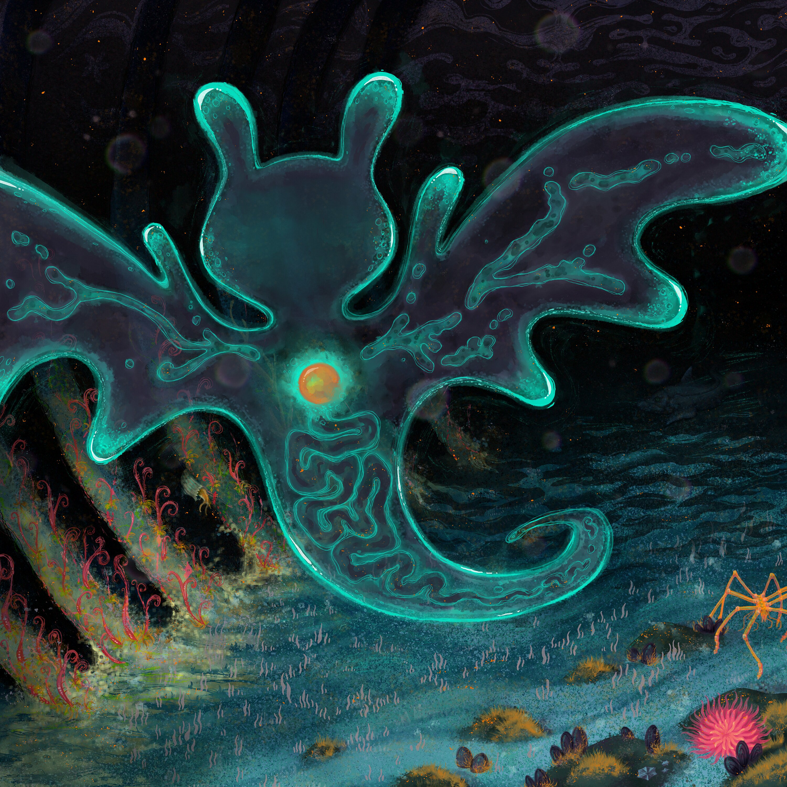
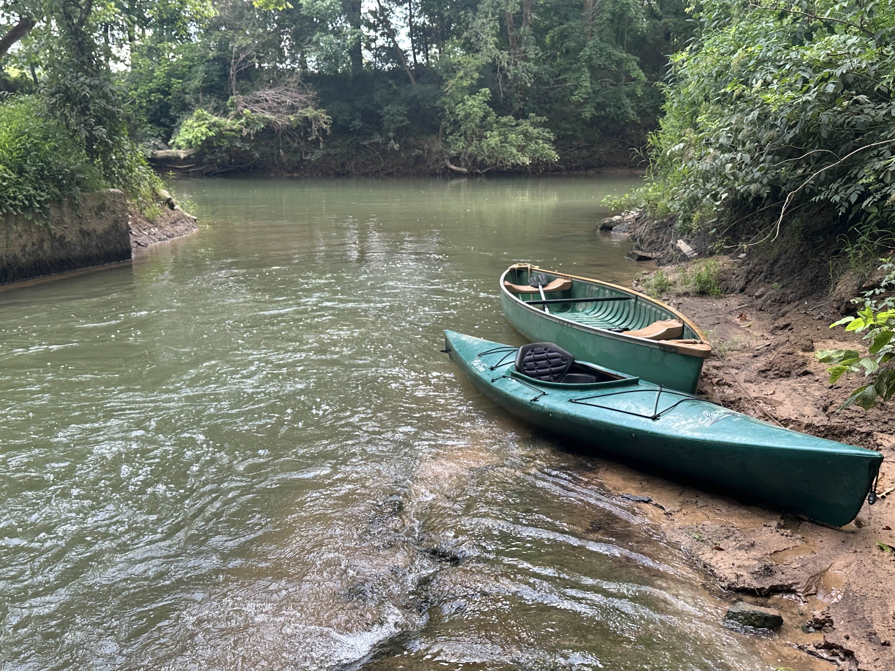

Hobbies
 Im hugely into music of many different kinds. My favorite album of all time is 'plastic death' by glass beach that came out last year (album art on the right).
I also play a lot of games, some of my favorites being Siege, Minecraft, Rimworld, RDR2, Outer Wilds, Journey, and GGXXAC+R even though I suck badly at it, but Im learning slowly.
 Im a big fan of Kayaking especially on rivers. Its very peaceful to float downstream and see wildlife like beavers and cranes out in their habitat.